4月29日(水)
第23回中国労金学童軟式野球大会予選
2回戦
常盤クラブ 5 - 4 西宇部クラブ
ギリギリの戦いでいたが最後まで諦めずに戦い切りました。
これまでの試合結果を掲載しています
4月29日(水)
第23回中国労金学童軟式野球大会予選
2回戦
常盤クラブ 5 - 4 西宇部クラブ
ギリギリの戦いでいたが最後まで諦めずに戦い切りました。
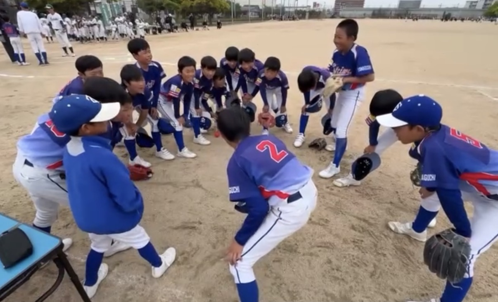
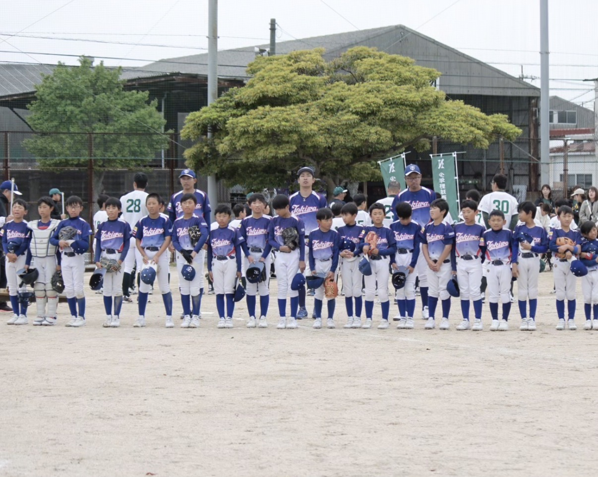
4月29日(水)
第23回中国労金学童軟式野球大会予選
1回戦
常盤クラブ 8 - 2 東岐波クラブ
ゲーム中盤まで苦しい戦いで、終盤で打線が繋がり見事勝利です。
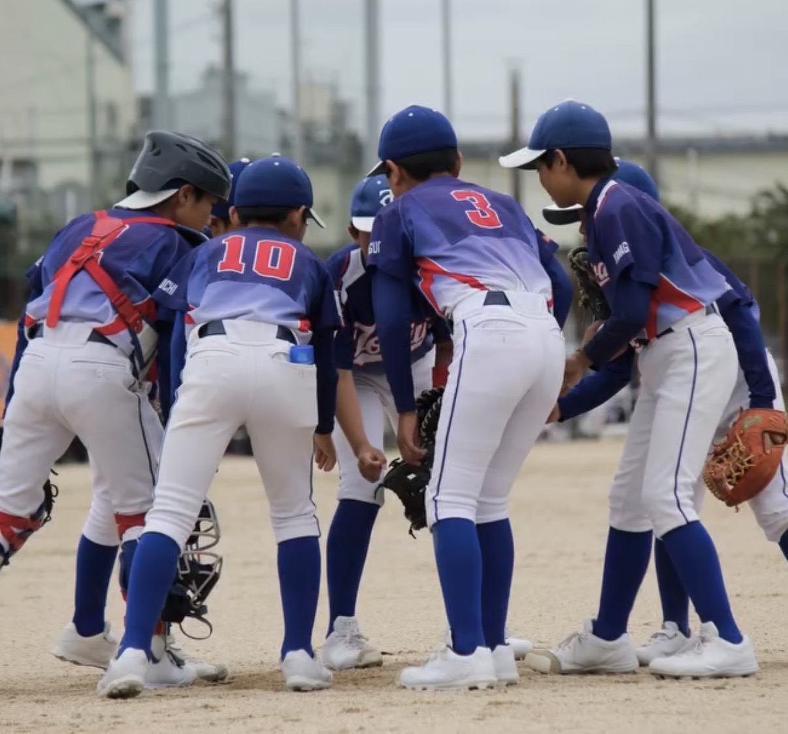
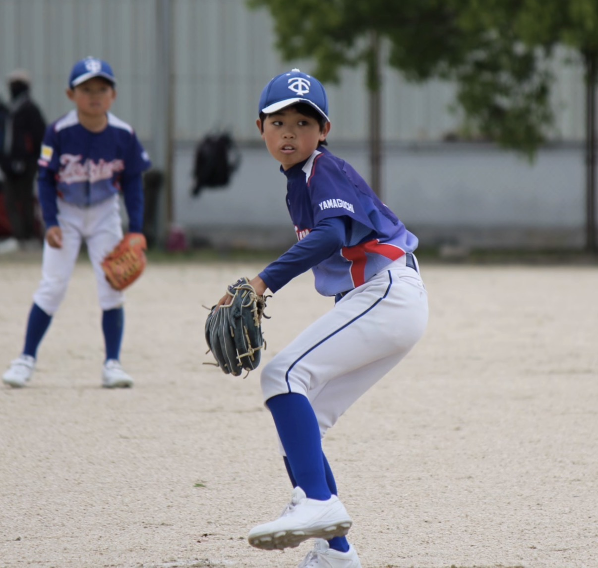
3月20日(金)
高円宮賜杯第46回全日本学童軟式野球大会マクドナルドトーナメント予選
決勝
常盤クラブ 6 - 5 岬クラブ
宇部市１位をかけた一戦で宇部市１位で通過で県大会出場です。
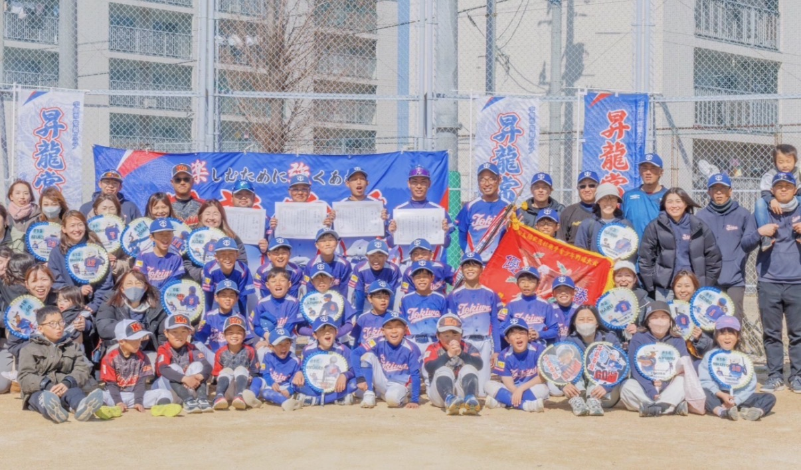

3月20日(金)
高円宮賜杯第46回全日本学童軟式野球大会マクドナルドトーナメント予選
準決勝
常盤クラブ 7 - 5 東岐波クラブ
県大会をかけた一戦で集中して県大会の切符を掴み取りました。
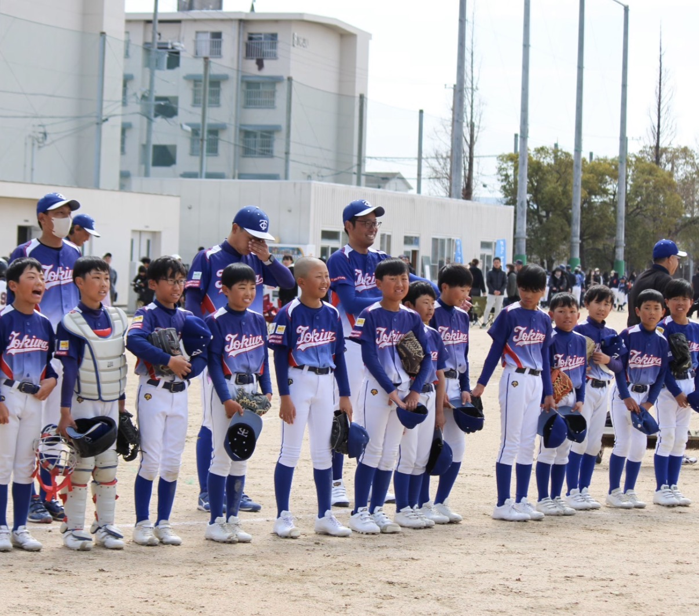
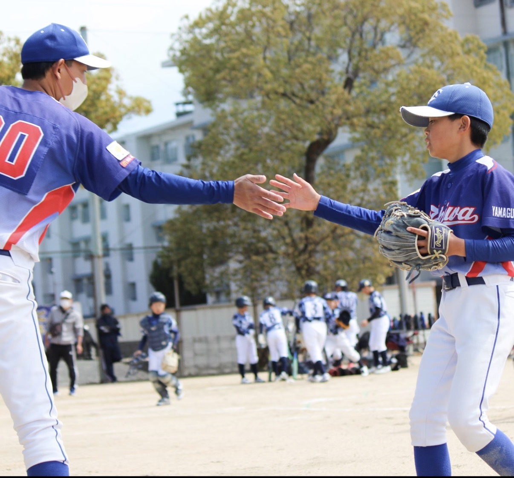
3月14日(土)
高円宮賜杯第46回全日本学童軟式野球大会マクドナルドトーナメント予選
準々決勝
常盤クラブ 2 - 1 恩田クラブ
最後まで諦めずに戦い切ったナイスゲームでした。
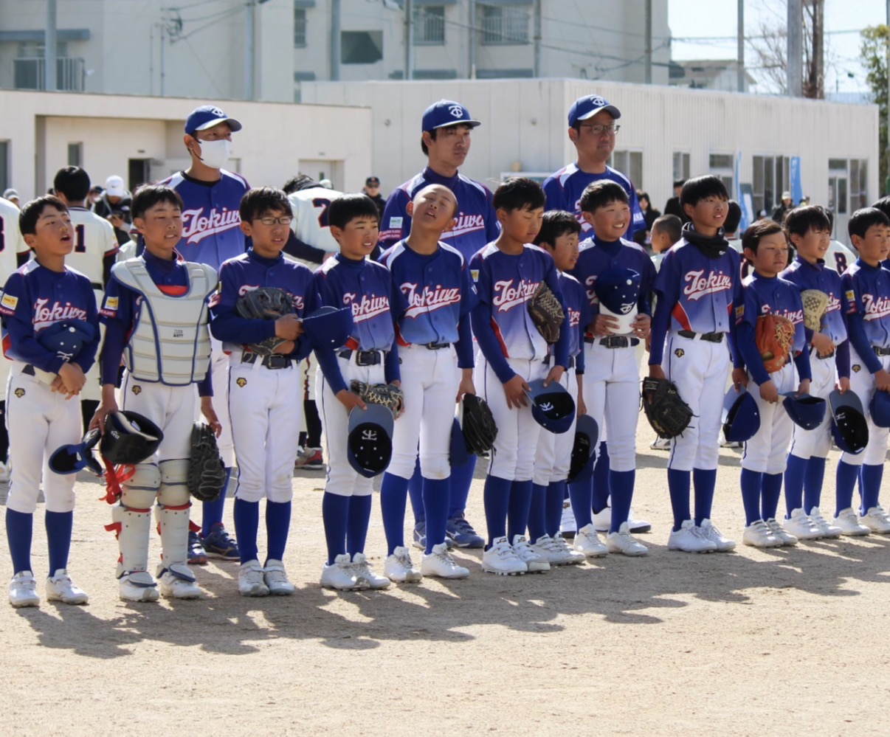
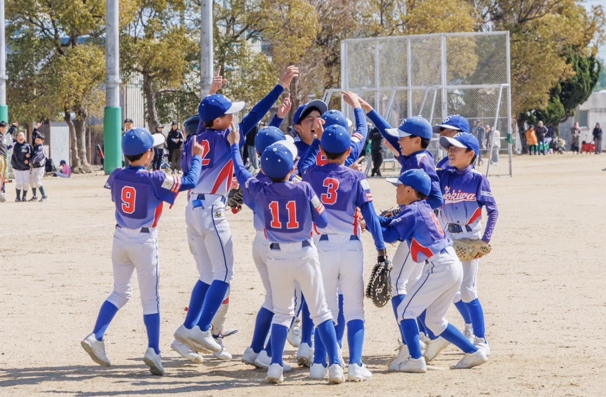
3月8日(日)
高円宮賜杯第46回全日本学童軟式野球大会マクドナルドトーナメント予選
1回戦
常盤クラブ 10 - 2 新川クラブ
県大会をかけた初戦、全員で勝ち取ったゲームでした。
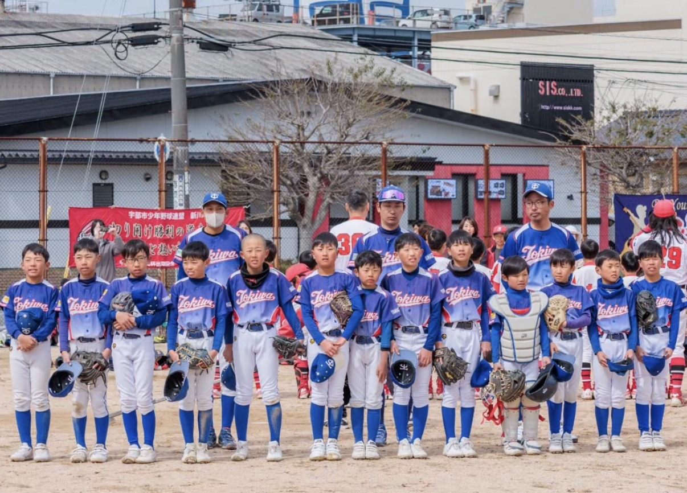
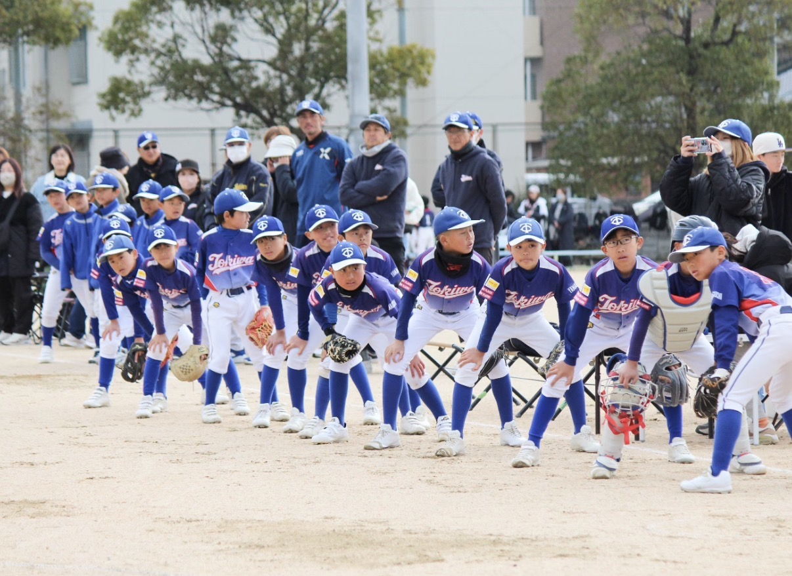